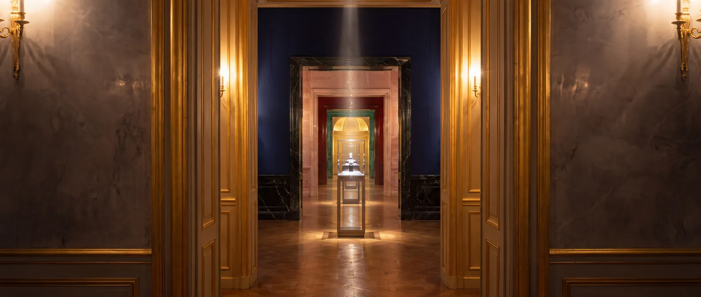
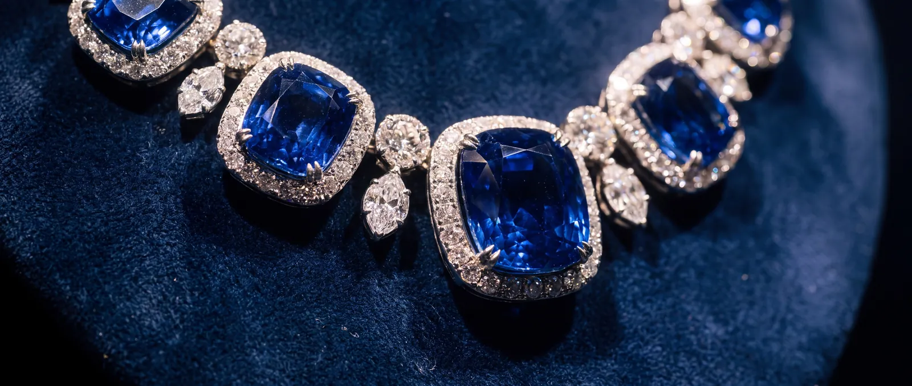
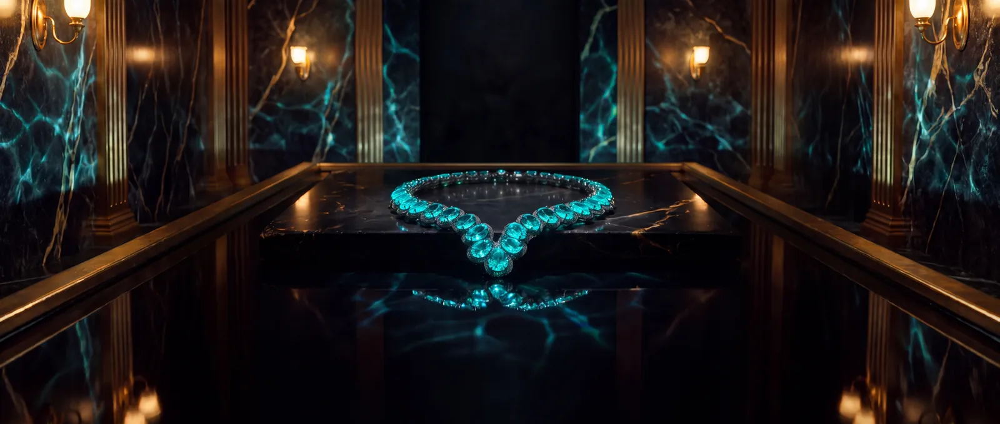
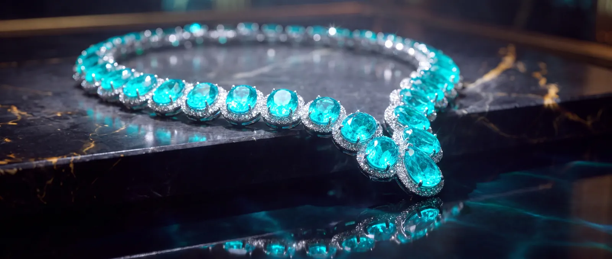
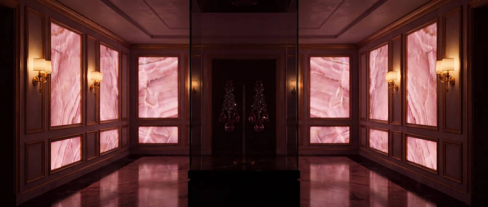
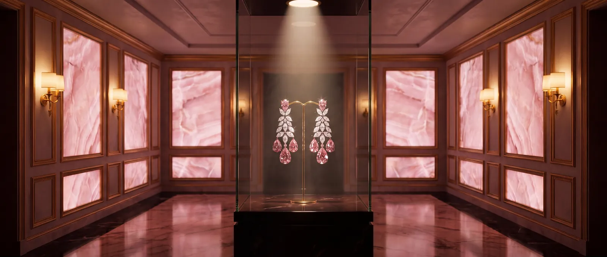
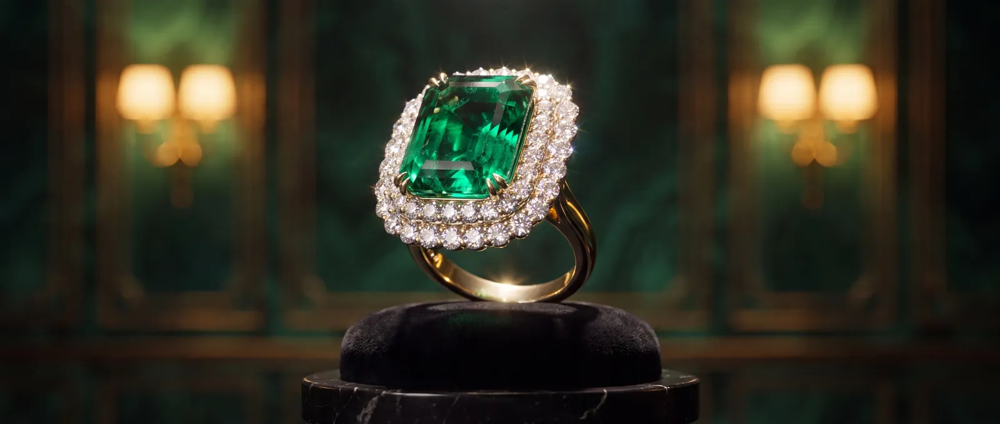
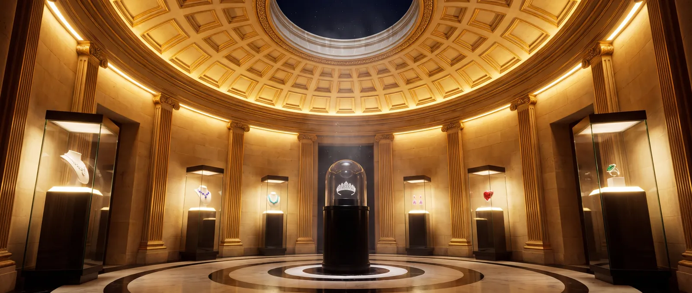

Room I of VII
Aurora
Diamond waterfall bib
- 212
- diamonds
- 141.6 ct
- in total
- 30.08 ct
- D flawless pear



Room I of VII
Diamond waterfall bib


Room II of VII
Sapphire collar



Room III of VII
Paraíba tourmaline riviera



Room IV of VII
Pink diamond chandelier earrings


Room V of VII
Heart ruby pendant


Room VI of VII
Emerald cocktail ring



Room VII of VII
Sunray tiara

An exhibition of high jewellery, after hours
Seven jewels, seven salons. Tonight the house opens for one visitor.
The enfiladeSeven salons in a line, each with a lamp of its own. Walk on and they will wake for you.

The rotunda, every lamp lit
Private viewings take place after the house has closed, for one guest and one guide. Every piece can be held, tried on and seen by daylight in the room upstairs.